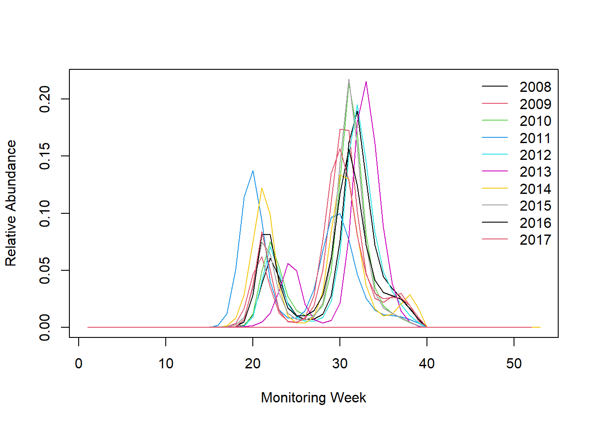

Here you we will use the rbms package to estimate a regional flight curve for two different species, Maniola jurtina and Polyommatus icarus. We will use a subset of real data over 10 years, extracted from the eBMS database and generously provided by our colleagues in France, the UK and the Netherlands. The data have been anonymized and their spatial resolution limited to 1km accuracy, but the count are real, including the noise.
The bms_workshop_data folder that can be downloaded here.
For this section, you will need to install and load the rbms package available on GitHub with some explanation and documentation available here
if(!requireNamespace("devtools")) install.packages("devtools")
devtools::install_github("RetoSchmucki/rbms")If you have difficulty to install the package directly, you can get the rbms.v_xxx.tar.gz file and install from file in R or RStudio.
Here we will use the count and visit data.
Let’s first explore the data and what is in these two tables
library(DT)
datatable(b_count_sub[1:50, ], rownames = FALSE, filter = "top", options = list(pageLength = 5, scrollX = T))datatable(m_visit_sub[1:50, ], rownames = FALSE, filter = "top", options = list(pageLength = 5, scrollX = T))## bms_id species_name
## 1: FRBMS Maniola jurtina
## 2: FRBMS Polyommatus icarus
## 3: NLBMS Polyommatus icarus
## 4: NLBMS Maniola jurtina
## 5: UKBMS Polyommatus icarus
## 6: UKBMS Maniola jurtina## [1] 2008 2009 2010 2011 2012 2013 2014 2015 2016 2017 2018The functions available in rbms package work on single species and within one region. This way, the function can be run on various cluster, in parallel or in for loops, but this is your choice and here wi will run it for a single species in one region.
In the rbms package, you will find two example data set with the required column names, these names are “hard coded” so they need to be exactly the same in your data sets.
setnames(m_visit_sub, c("transect_id_serial", "visit_date"), c("SITE_ID", "DATE"))
names(m_visit_sub) <- toupper(names(m_visit_sub))
setnames(b_count_sub, c("transect_id_serial", "visit_date", "species_name"), c("SITE_ID", "DATE", "SPECIES"))
names(b_count_sub) <- toupper(names(b_count_sub))ts_dwmy_table()
ts_monit_season()
ts_season <- rbms::ts_monit_season(ts_date,
StartMonth = 4,
EndMonth = 9,
StartDay = 1,
EndDay = NULL,
CompltSeason = TRUE,
Anchor = TRUE,
AnchorLength = 2,
AnchorLag = 2,
TimeUnit = "w")MY_visit_region <- m_visit_sub[BMS_ID %in% region_bms, ]
ts_season_visit <- rbms::ts_monit_site(MY_visit_region, ts_season)Above, we already identified the species in the object s_sp.
MY_count_region <- b_count_sub[BMS_ID %in% region_bms, ]
ts_season_count <- rbms::ts_monit_count_site(ts_season_visit, MY_count_region, sp = s_sp)mgcv package.
ts_flight_curve <- rbms::flight_curve(ts_season_count,
NbrSample = 500,
MinVisit = 3,
MinOccur = 2,
MinNbrSite = 5,
MaxTrial = 4,
GamFamily = "nb",
SpeedGam = FALSE,
CompltSeason = TRUE,
SelectYear = NULL,
TimeUnit = "w"
)
saveRDS(ts_flight_curve, file.path("bms_workshop_data", paste(gsub(" ", "_", s_sp), paste(region_bms, collapse="_"), "pheno.rds", sep = "_")))ts_flight_curve <- readRDS(file.path("bms_workshop_data", paste(gsub(" ", "_", s_sp), paste(region_bms, collapse="_"), "pheno.rds", sep = "_")))
datatable(ts_flight_curve$pheno[1:370, .(SPECIES, M_YEAR, MONTH, trimWEEKNO, WEEK_SINCE, ANCHOR, NM)], rownames = FALSE, filter = "top", options = list(pageLength = 5, scrollX = T))
rbmsdoes not contain a plot method, so you have to make your own with your favourite tool.Bellow is example with plot in base R I am sure you can do better!
## Extract phenology part
pheno <- ts_flight_curve$pheno
## add the line of the first year
yr <- unique(pheno[order(M_YEAR), as.numeric(as.character(M_YEAR))])
if("trimWEEKNO" %in% names(pheno)){
plot(pheno[M_YEAR == yr[1], trimWEEKNO], pheno[M_YEAR == yr[1], NM], type = 'l', ylim = c(0, max(pheno[, NM])), xlab = 'Monitoring Week', ylab = 'Relative Abundance')
} else {
plot(pheno[M_YEAR == yr[1], trimDAYNO], pheno[M_YEAR == yr[1], NM], type = 'l', ylim = c(0, max(pheno[, NM])), xlab = 'Monitoring Day', ylab = 'Relative Abundance')
}
## add individual curves for additional years
if(length(yr) > 1) {
i <- 2
for(y in yr[-1]){
if("trimWEEKNO" %in% names(pheno)){
points(pheno[M_YEAR == y , trimWEEKNO], pheno[M_YEAR == y, NM], type = 'l', col = i)
} else {
points(pheno[M_YEAR == y, trimDAYNO], pheno[M_YEAR == y, NM], type = 'l', col = i)
}
i <- i + 1
}
}
## add legend
legend('topright', legend = c(yr), col = c(seq_along(c(yr))), lty = 1, bty = 'n')